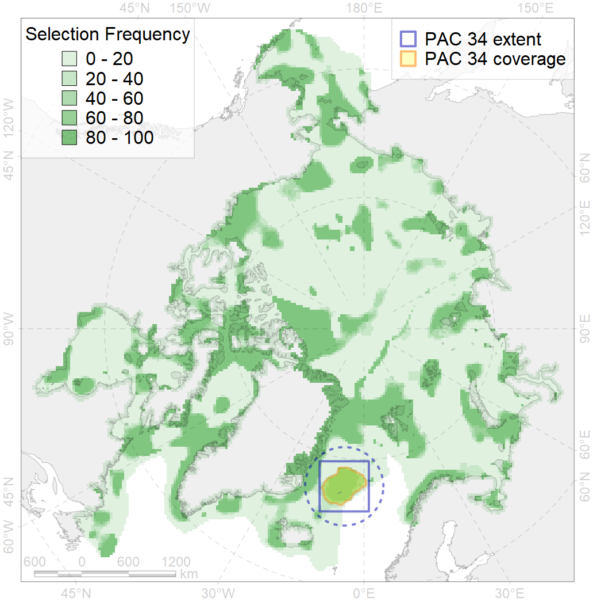
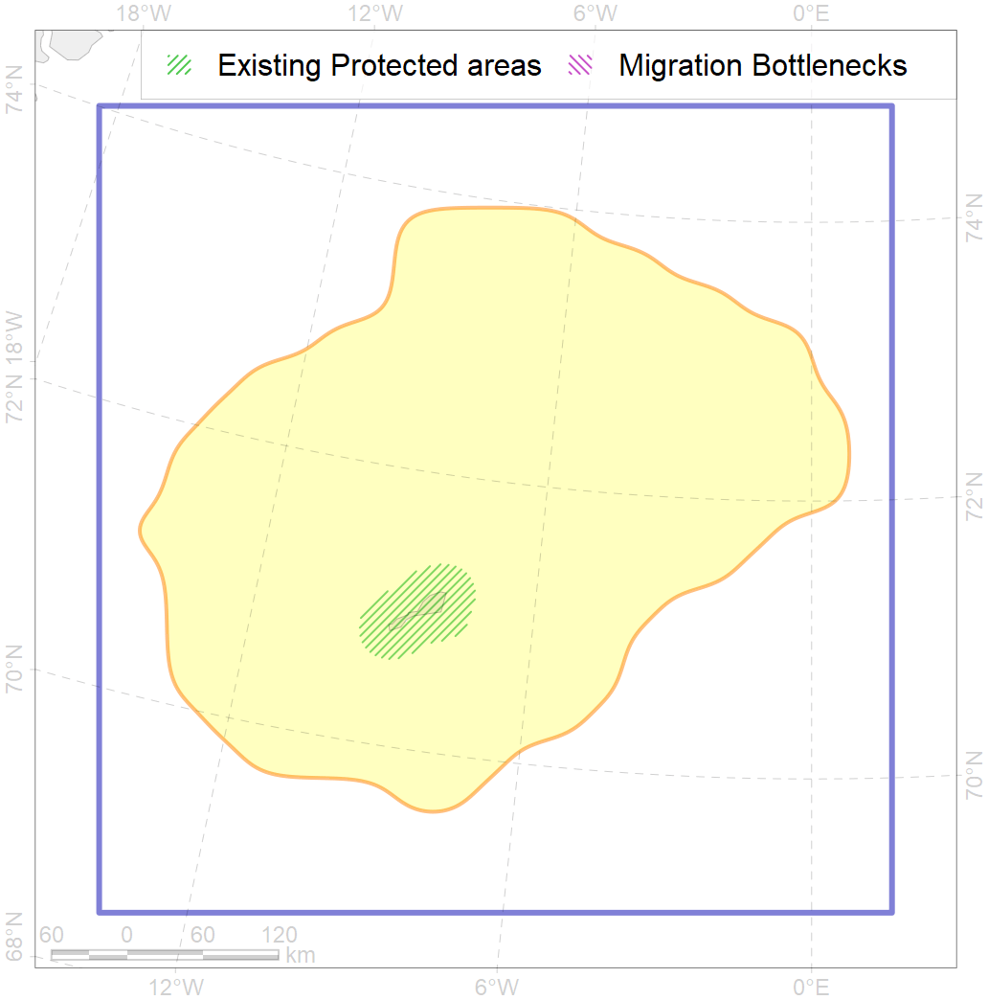

34
For more information regarding this PAC and to conduct custom spatial analysis using the PAC data or any spatial query, please consult Accenter.

0
CFs entirely within the PAC area
7
CFs at least 25% within the PAC area
6
CFs with at least 50% of their target achieved in the PAC
19
CFs with at least half of their target achieved in the PAC
| CF ID | CF Name | Proportion in the PAC | Conservation Target | Contribution to ArcNet Target Achievement | PAC’s Contribution to the Achieved Target |
|---|---|---|---|---|---|
| 7189 | VI.1.8. Seamounts | 55.7% | 97.3% | 57.0% | 56.8% |
| 5049 | Fin whale summer feeding areas in Jan Mayen | 48.9% | 52.8% | 81.4% | 81.3% |
| 6031 | Little auk (Alle alle alle) breeding colonies in Greenland and Canada | 40.3% | 72.0% | 55.9% | 54.2% |
| 7173 | VII.1.3. Abyssal hills | 35.6% | 14.3% | 227.9% | 73.6% |
| 7186 | VI.1.3. Ridges | 31.0% | 44.3% | 60.6% | 57.4% |
| 7174 | VII.1.4. Abyssal mountains | 28.0% | 23.5% | 108.7% | 55.3% |
| 5064 | Killer whale summer feeding areas in the North East Atlantic | 27.1% | 6.0% | 369.6% | 61.8% |
| 7187 | VI.1.4. Spreading ridge | 20.2% | 25.3% | 59.5% | 34.0% |
| 7184 | VI.1. Greenland Sea and Fram Strait Basin rises VI.1.1. Plateaus | 17.8% | 11.5% | 134.8% | 52.1% |
| 5066 | Minke whale feeding areas in the Central Atlantic | 17.7% | 12.0% | 134.5% | 40.3% |
| 6091 | Little auk (Alle alle alle) breeding colonies in Greenland and Canada buffer feeding area | 17.5% | 48.0% | 35.9% | 25.6% |
| 6022 | Atlantic puffin (Fratercula arctica naumanni) breeding colonies | 13.5% | 72.0% | 18.7% | 14.2% |
| 6090 | Atlantic puffin (Fratercula arctica naumanni) breeding colonies buffer feeding area | 13.1% | 48.0% | 26.7% | 16.9% |
| 5059 | Humpback whale summer feeding areas in the Eastern Greenland and Iceland | 12.8% | 12.0% | 98.7% | 33.1% |
| 5101 | Bottlenose whale summer feeding areas in the Northeast Atlantic | 12.4% | 12.0% | 90.8% | 72.9% |
| 7172 | VII.1.2. Abyssal plains | 12.3% | 28.9% | 41.8% | 34.5% |
| 5037 | Blue whale summer feeding areas in the Northeast Atlantic | 10.0% | 25.2% | 34.4% | 26.1% |
| 6101 | Common murre (Uria aalge aalge) breeding grounds buffer feeding area | 9.9% | 36.0% | 27.0% | 19.1% |
| 7027 | Greenland Sea abyssal region | 9.7% | 15.7% | 53.7% | 53.1% |
| 6002 | Little Auk (Alle alle alle) winetring grounds | 9.0% | 24.0% | 32.7% | 22.6% |
| 6004 | Little Auk (Alle alle polaris) wintering grounds | 8.4% | 18.0% | 41.1% | 23.0% |
| 6076 | Common murre (Uria aalge aalge) wintering grounds | 6.6% | 18.0% | 33.6% | 18.0% |
| 4064 | Range of the Smooth polar sculpin (Cottunculus subspinosus) | 6.2% | 6.0% | 78.9% | 16.5% |
| 6075 | Common murre (Uria aalge aalge) breeding grounds | 6.2% | 54.0% | 11.4% | 10.8% |
| 6082 | Thick-billed murre (Uria lomvia lomvia) breeding colonies | 6.1% | 72.0% | 8.4% | 7.2% |
| 5113 | Sperm whale summer feeding areas in Atlantic | 6.0% | 14.4% | 35.5% | 30.0% |
| 6023 | Atlantic puffin (Fratercula arctica naumanni) wintering grounds | 6.0% | 24.0% | 21.8% | 17.7% |
| 3024 | Marginal Ice Zone distribution in April in the Iceland LME | 5.7% | 12.0% | 33.8% | 21.2% |
| 4027 | Feeding/migration area of the Atlantic salmon (Salmo salar) American populations | 4.8% | 20.4% | 19.7% | 13.5% |
| 6106 | Thick-billed murre (Uria lomvia lomvia) breeding colonies buffer feeding area | 4.3% | 48.0% | 8.7% | 6.4% |
| 7171 | VII.1. Greenland Sea and Fram Strait Basin basins VII.1.1. Rises (slope foot) | 3.8% | 14.0% | 23.2% | 19.3% |
| 4045 | Feeding/migration area of the Pink Salmon (Oncorhynchus gorbuscha), native distribution | 3.8% | 6.0% | 55.5% | 9.1% |
| 4032 | Range of the Arctic skate (Amblyraja hyperborea) | 3.7% | 3.0% | 113.9% | 8.7% |
| 4096 | Range of the Glacial eelpout (Lycodes frigidus) | 3.7% | 6.0% | 54.2% | 13.9% |
| 6099 | Black-legged kittiwake (Rissa tridactyla tridactyla) breeding colonies buffer feeding area | 3.3% | 64.8% | 5.1% | 5.1% |
| 4079 | Fish zoogeography, Arctic Region, Arctic Abyssal Province (Scandian, Central-Arctic and Baffin Deep-sea Districts ) | 3.1% | 4.0% | 67.5% | 11.5% |
| 6083 | Thick-billed murre (Uria lomvia lomvia) wintering grounds | 2.7% | 24.0% | 10.0% | 7.0% |
| 4037 | Distribution of the Glacial cod (Arctogadus glacialis) | 2.3% | 9.0% | 23.1% | 5.6% |
| 5046 | Bowhead whale of the Spitsbergen population home range | 1.3% | 18.6% | 6.2% | 6.2% |